Model Validation under Uncertainty¶
Introduction¶
This document aims at summarizing concepts about the validation of computational physics type model, and ideally draft an implementable procedure to evaluate model accuracy and adequacy. We choose to focus on the concepts provided by Romero 1, rather than making a review of the stochastic validation metrics.
We also choose, as proposed by Romero, to put at the centre the evaluation of the risk of making erroneous extrapolative predictions for downstream applications. Indeed, the aim of model validation is to generate knowledge for downstream applications, in order to condition the model to minimize extrapolation errors. These knowledge go beyond deterministic accuracy criteria (the model should be close the experiment to less than \(10 \%\)).
For instance, if a model is validated from a deterministic point of view (in the mean sense) with respect to four experimental data, and that the model accuracy for a scalar output is found to be \([2\%, 5\%, -10\%, 8\%]\), how can this result be used to gain confidence in the model for extrapolations further away than a small variation around the validation points?
Once model predictions are performed beyond the validation points, we cannot bound the obtained error. However, assessing the risk of obtaining a large error is useful information. The approach in this document is to gather procedures, even if they are qualitative criteria, allowing to bring useful information for the use of the model for downstream extrapolative applications, and go beyond an accuracy evaluation.
Indeed, how to justify the expensive cost of validation experiments and model development if they have no effect on the downstream extrapolative predictions? So validation should be carried out such that the model can be modified regarding a given downstream application (see model conditioning2) It requires more than just accuracy evaluation.
In terms of terminology, model validation is defined by the Society for modelling and Simulation International 3 like this:
Quote
“Model Validation is the substantiation that a computerized model within its domain of applicability possesses a satisfactory range of accuracy consistent with the intended application of the model.”
Romero1 proposes a more operational definition:
Quote
Validation is the compilation of useful indicators regarding the accuracy and adequacy of a model’s predictive capability for output quantities (possibly filtered and transformed) that are important to predict for an identified purpose, where meaningful comparisons of experiment and simulation results are conducted at points in the modelling space that present significant prediction tests for the model use purpose.
Since validation basically consists in comparing evaluated accuracy to an accuracy requirement, we will also briefly discuss the evaluation of adequacy requirements, including the case of allocating accuracy and uncertainty budgets from system-level to component level.
1. Validation framework¶
As denoted by the title of this document, the validation activity discussed here considers that the observed real system has:
- stochastic inputs (such as a material property)
- measurement errors (measurement of system outputs is uncertain and possibly biased due to type A and B errors
Note
It does not mean that the model itself is stochastic. All models considered in VIMSEO have a deterministic form (same inputs give same outputs). This document considers deterministic model form.
It means that we are in the framework of stochastic validation.
Sources of uncertainty¶
Since we are performing a stochastic validation activity, we now describe the sources of uncertainty, both from the experiments and the simulations.
In general the net experimental uncertainty may include contributions from (Romero 2011):
- A. test-to-test stochastic variability, including:
- the tested systems and/or phenomena (e.g. part geometries, material properties, stochastic behaviour, etc.);
- measurement and processing errors on system outputs;
- measurement and processing errors on system inputs (environmental conditions, applied loading/excitation, etc.);
- B. epistemic uncertainty on applicable response statistics or quantities determined from limited sampling of the above stochastic factors in a limited number of repeated experiments;
- C. systematic bias uncertainties associated with measurement of system outputs and any procedures and models used to process, correct, and/or interpret the measured data;
- D. systematic measurement and processing uncertainty on system inputs and experimental factors, including apparatus/setup, test conditions, and boundary conditions.
Now regarding simulation uncertainty, they issue from:
- uncertainties from numerical discretization effects
- results processing
- input uncertainties in the model simulations (e.g. uncertainty in the experimental conditions)
- model-intrinsic uncertainties, including model-form and model parameters (uncertainties on the calibrated parameters). Note that model-intrinsic uncertainties are a-priori uncertainties of the validation, since we validate a conditioned (calibrated) model.
Stochastic validation¶
We introduce the concept of validation domain 4, which is a key notion in VV&UQ framework, in relation with the verification domain and application domain. The comparison of these domains indicates if the model is used in interpolation or extrapolation regarding a given application.
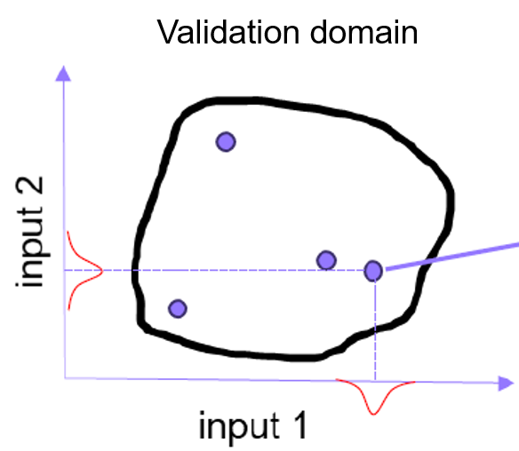
A validation domain is composed of validation points, themselves composed of several observations, denoted as samples in the following (because in the simulations, we reproduce the experimental observations but we cannot denote these simulation conditions as observations).
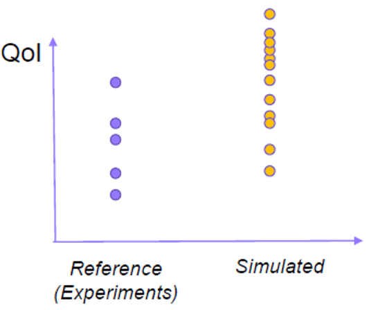
We introduce the notation of "validation case" to denote a set of validation points corresponding to a given experiment.
Following the notations of 4, the relationship between the experimental observations and the model for each observation is:
where:
- \(e_{y,obs}\) is the observational, or measurement error
- \(e_m\) is the model form error
- \(e_x\) is the input errors. We have not found its definition in Riedmaier paper.
We assume that this term includes:
- measurement errors of the inputs
- error when mapping observed input samples to simulation input samples. Indeed, at a validation point, we have in general a small number of experimental observations. From these samples, we infer a probability distribution of the input, and sample this distribution with possibly a large number of points, before propagating through the model. This operation can lead to errors, in the sense that the simulation input points may not accurately represent the experimental stochastic input.
- \(e_{\theta}\) is the parameter error. We assume that this error corresponds to calibration error
- \(e_h\) is the discretization error (including mesh resolution error, numerical truncature, numerical cancelation etc...)
Note
As described by the standard VV&UQ workflows (verification -> calibration -> validation), we are not seeking to demonstrate that the model form and parameter calibration are each correct, but rather consider the effectiveness of the whole (calibration and model form) for downstream extrapolative predictions. So \(e_m\) and \(e_{\theta}\) can be fused as a model form error.
Considering the response of the system, we have on the simulation side:
where \(x_{mod}\) are the inputs considered to affect the system behaviour, and \(\theta\) are the model parameters. And on the experimental side:
where \(x_{con}\) are the controlled inputs, and \(x_{unc}\) the uncontrolled inputs. \(x_{mod}\) is a subset of the union of \(x_{con}\) and \(x_{unc}\).
Test pyramid¶
We also assume that we are working in the context of a test pyramid, supported by the VV&UQ concepts. To make this concept effective for accumulating knowledge on some modelling approach with a final objective of performing predictive applications with a model, then an underlying concept is necessary. It is called the travelling model and will be discussed in the next section. The idea is that the subject of the validation are not the individual strong models composing the pyramid, but the travelling model, which is progressively calibrated and validated on the load cases of the pyramid, thus accumulating knowledge on this travelling model that will help to assess the confidence in downstream extrapolative predictions.
Traveling Model and Experimental Model¶
A first question regarding validation is what is the subject of the validation. Let's consider the example given by 1, in which a different conclusions on model adequacy are drawn due to a lack of definition of what is validated.
Consider a model that returns the recharge rate of groundwater, taking as input, among others, the precipitations and the stream recharge. The validation uses reference data over period 2010-2020. The stream recharge is evaluated from a calibration over period 2000-2010. Then, including or not the stream recharge into the model under validation (which means, consider that the calibrated value holds or that it is an input of the validation) will change the conclusions on the model adequacy. Indeed, if it is included in the model, then the model will be considered adequate only if the stream recharge is sufficiently close between periods 2000-2010 and 2010-2020, which is a very hazardous hypothesis.
So the travelling model must be precisely contoured before the validation activity.
The travelling model concept is useful because it allows to compare discrepancies for several load cases, thus increasing the amount of knowledge, which makes more robust the downstream use of the model for an application. The validation of a travelling model on several load case is also natural in the context of the test pyramid approach, where the lower level includes a large range of load cases necessary to calibrate the model.
Since the travelling model interface must be common to several load cases, a travelling model cannot be directly compared to an experiment. Indeed, if the load cases involve different boundary conditions, then additional models (called auxiliary model) are necessary to map the experiment inputs and outputs.
The leads us to the concept of strong and weak models.
A weak model is a model which cannot directly represent a physical system. On the contrary, a strong model does.
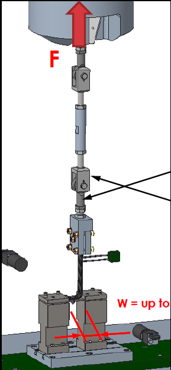
In the above figure, the travelling model is the L-shape specimen, and the surrounding layer necessary to substantiate this "model" into a runnable experiment is all the surrounding apparatus. This surrounding layer, both in the simulation or experimental context, may be called auxiliary models. The final system is an experimental model (e-model), which by definition is a strong model.
The idea that a substantiated model (a simulation that can be compared to an experiment) can be decomposed into a travelling model and a surrounding layer (the union of both being a strong model), can also be applied to an experiment. The notion of e-model (experimental-model) is useful since it allows to draw a parallel with the simulation counterpart (how the modelled and physical auxiliary models compose).
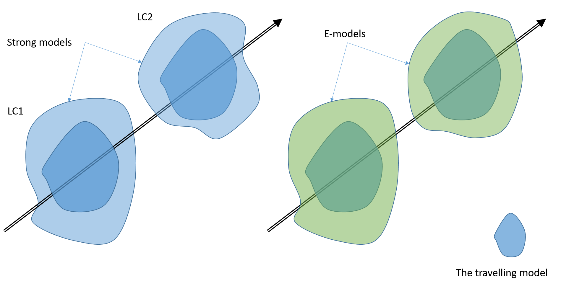
The above figure illustrates this decomposition. Here, for simplicity, the simulated and reference travelling models are considered equal. So the travelling model perfectly matches the experiment (validation should return zero discrepancy). However, to be compared to an experimental reference, the simulated travelling model must be instantiated (substantiated) as a strong model. As a result, even if the experimental and simulated travelling model are the same, a mismatch between prediction and experiment can still be observed, due to the fact that the auxiliary models in the simulation and experiment are different.
The travelling model can contain uncertainties that are inherently affiliated with the travelling model, such as an uncertainty range on parameter values in a turbulence or material model. These uncertainties are defined prior to the current experiment (they are not determined by the experiment) and come to the experiment model as a priori uncertainties in model form and/or parameter values.
To obtain a useful validation, one requirement is that the auxiliary models yield a bias and an uncertainty smaller than the ones due to the travelling model. As a result, it is crucial to carefully document the auxiliary models in the simulations and the experiment. This aspect is often not sufficiently handled.
Another question is whether we should include the mesh in the travelling model.
If not included, then solution verification should be carried out
for each geometry change.
If included, it is not necessary. In the latter case, it is assumed that a
geometry-adaptive automatic mesh generation is performed, and that this
mesh generation strategy is part of the travelling model.
The underlying hypothesis is that the mesh quality is uniform over the validation and application
spaces.
This approach is the one adopted for the models integrated in the vimseo-composites plug-in.
It seems attractive to use the fact that the travelling model input and output spaces remain the same during the whole validation activity for all strong models built on it. As a result, we may consider gathering on a scatter matrix plot the travelling model input versus the discrepancy to the experiments for all the samples of the validation points, and for each strong model validation. This plot may show regions where the travelling model shows large or small discrepancy, which would be useful knowledge for model downstream predictions, and for model error inference/ bias correction for applications.
This approach is possible only if the travelling model input (resp. output) space can be mapped onto the experiment input (resp. output) space Indeed, in the end, the discrepancy must be computed in the experiment output space (and thus the strong model output space).
It is not always possible. For example, if the travelling model is a material damage subroutine, and the subroutine is used in a Finite Element solver, then the input space of the travelling model is the stress or strain values at the Gauss points in each finite element of the strong model mesh, and its output space is a displacement value at each Gauss point. As a result, the travelling model output space cannot be directly compared to the experiment output, and thus a discrepancy cannot be computed. In this case, the discrepancy scatter plot matrix can only be plotted per strong model (one for each strong model), thus reducing the number of points per plot and weakening the analysis of model error behaviour.
Note
As a result, the definition of a mapping of the travelling to the strong model spaces is a key question. While it does not seem obvious at first sight, we can note that if we were able to detect the regions in the specimen that mostly control the discrepancy, then we could extract the input values of the travelling model in this region and associate them to the discrepancy. Assuming that the region of interest reduces to single or a few points, this procedure could be applied to all strong models, and finally a global scatter matrix of discrepancy over the input space could be plotted for all strong model validation cases.
3. Adequacy requirements¶
Before proceeding to model-versus-experiment discrepancy evaluation, we briefly discuss adequacy requirements. Indeed, one typical criterion (error \(< 10 \%\)), and is it sufficient to assess a risk of model extrapolation error.
We may distinguish between model accuracy and model adequacy:
- accuracy:
Quote
‘accuracy’ pertains to the model’s mapping of inputs to output results, not to accuracy/correctness of the model’s internal representations of reality.
- adequacy pertains to how the model is satisfactory, or effective, or acceptable for downstream applications.
Adequacy is certainly more than an accuracy criterion (a threshold on a scalar metric). In the adequacy criteria section, we will attempt to provide adequacy criteria, either quantitative or not.
Case of single model validation¶
To illustrate the importance of adequacy criterion, we consider the case where a single (strong) model is validated, and that the adequacy requirement is reduced to a lower bound accuracy criterion.
Romero (2011) argues that setting a-priori accuracy criteria is counter-productive. Indeed, imagine that we set a \(2 \%\) maximum error on the model. Then, we need an experiment to evaluate the error. Since the model cannot be validated to better accuracy than the experiment, the a-priori maximum error criterion means that the experimental uncertainty must be less than \(2 \%\). This constraint directly drives the cost of the experiment, and the experiment may be found unfeasible to conceive for a given budget with such a low uncertainty. So, when setting adequacy criterion, one main driver is the experiment cost and feasibility regarding its repeatability. These aspects are thus to be considered prior considering model adequacy criterion.
Adequacy requirements in multi-level systems¶
In the context of a travelling model being substantiated in several strong models for various applications, the validation of the travelling model necessarily involves the definition of a hierarchy of strong models, the so-called test pyramid.
A bottom-up validation approach is considered as the standard process, where sub-models are progressively validated from the lower level to the higher level. However, as mentioned in the previous section, a-priori adequacy criteria should be avoided at sub-model level.
We can assume that adequacy criteria can be defined at system level. Examples of quantitative adequacy criteria may be accuracy criterion (the mean value of the prediction should be close to the experimental mean value to within less than \(10 \%\)), or uncertainty criterion (the interval of uncertainty defined as the $25 \% and 75\% percentiles should be less than \(10 \%\) of the mean value). The question is then how to allocate this system-level accuracy and uncertainty budgets to each sub-models. In other words, is it possible to cascade (top-down) adequacy criteria in a test pyramid? As mentioned by Romero (2011), there is a non-uniqueness issue and the associated technical problems and trial-and-error difficulty involved with trying to parse a system-level modelling accuracy budget to corresponding budgets of the individual submodels. Another difficulty is to find a mapping for the adequacy criteria determined on the system to the sub-model validation experiment (which may not have the same geometry, input conditions etc...)
Note
Romero proposes to see all submodels of a system, and aggregate their discrepancy (in real-space). Thus, we let the sub-model errors cancel or superpose, avoiding too strict sub-model adequacy requirements (since their errors may cancel at system-level). Then, determining if the submodel group fulfills the system adequacy criterion does not require validating each submodel (as would be done in a bottom-up approach). This reasoning seems to go against the travelling model concept, where the idea is to validate a hierarchy a strong models to accumulate knowledge on the common underlying travelling model.
The problem of allocating accuracy and uncertainty to sub-models can be seen as an optimisation problem, with a balance between:
- experiment cost for a given uncertainty on the outputs This subject of experiment design may be linked to the work of Marie Guerder on experiment optimisation for parameter identification.
- the impact at system level of the accuracy criterion imposed on each sub-models. In other words, what is the impact if a given sub-model has a large model-form error or uncertainty? If the impact is small, then the accuracy criterion for this model can be loosened, and the requirement for the corresponding experimental uncertainty loosened as well. Sensitivity analysis of system-level error to sub-models error may be useful.
Link to PIRT. Helps in identifying where resources should be allocated (when there is a mismatch between importance of the phenomenon and modelling capability or data availability).
We can retain that the experiments involved in the validation activity should be considered before setting adequacy criteria on the model, and that setting accuracy and uncertainty at sub-model level may be posed as an optimisation problem.
4. Evaluating model discrepancy to experimental data¶
We now arrive at another central aspect of validation: determining the discrepancy between model and experiment, and more importantly which conclusion can be drawn for the risk assessment of model extrapolation error. Here the discrepancy includes model bias, but also considers model and experiment uncertainties, and also criteria of adequacy (possibly qualitative).
Discrepancy transform¶
It should be realised that a transformation is necessary when converting simulation outputs and experiment outputs to an error metric.
At a validation point, in the most general sense, a metric can be computed from the results, both for the simulations:
\(M_m[gm(x_{mod}, \theta)]\)
and the experiment:
\(M_s[gs(x_{con}, x_{unc})]\)
We deliberately do not directly consider a subtractive metric, as would be the well-known area metric. Indeed, the real space approach introduced by Romero1 recommends to keep the simulation and experiment result spaces separate. Also, the metrics \(M_m\) and \(M_s\) may not be the same functions, since the simulation result metric may include uncertainties and bias from source specific to the simulation (like mesh-discretization errors).
A procedure to build the real-space discrepancy characterisation¶
In this section, we attempt to define and draw a procedure to obtain the Real Space discrepancy formulated by Romero1. This procedure will be incomplete since, to our knowledge, all ingredients are not described with sufficient details, and we do our best to gather all indications to progress towards an applicable procedure.
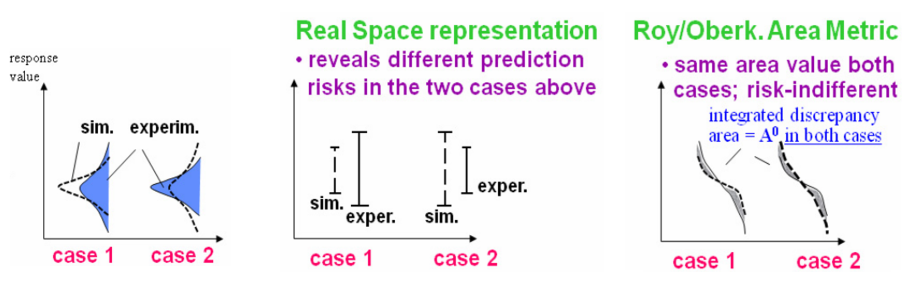
The above figure shows how a subtractive metric like the area metric can hide some trends in the model to experiment discrepancy. Here, a zero-bias model prediction versus experiment is chosen, but the simulated versus experimental uncertainties are different. The area metric is indifferent to this trend. However, the real space characterisation, by keeping the simulated and experimental results in their space, allows to assess different risks in using this model for downstream extrapolations (see below discussion on the comparison of simulated and experiment uncertainty magnitude).
According to Romero, an important contribution of the real-space discrepancy characterisation is its end-to-end project perspective toward the objectives of Best Estimate With Uncertainty (BEWU) model calibration (named "model conditioning" in the following), validation, hierarchical modelling, and extrapolative prediction.
Quote
Importantly, the uncertainty representation, propagation, and aggregation procedures are versatile and practical for the varieties of uncertainties found in experimentation and modelling.
According to Romero, the real-space comparison is based on uncertainty intervals: distributional uncertainty for all sources of uncertainty is not mandatory, and even not possible to define for all sources of uncertainties. Indeed, Romero argues that a validation framework relying necessarily on probabilistic uncertainty distribution is a too strong hypothesis, and in general not realistic. The framework should handle non-probabilistic uncertainties, and thus interval uncertainty. Distributional uncertainties should be processed as interval uncertainties and aggregated to other uncertainties. If some uncertainty sources are distributional, corresponding uncertainty intervals are computed based on two percentile values.
Construction of the experimental uncertainty intervals¶
The experimental uncertainty intervals is typically based on the systematic uncertainty that can be deduced from the output measurements. A distribution of the output quantity of interest can be inferred (either using a parametric method or a Bayesian approach), and two percentiles can be used to compute the bounds. As shown in the below figure, measurement uncertainty can then be added to this uncertainty interval.
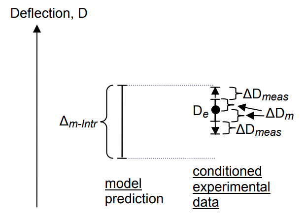
Data conditioning¶
Systematic experimental uncertainty must be taken into account when assessing model bias risk2. Consider that the 'true' value of a scalar output of a system is \(1000\) with an uncertainty of \(\pm 10\). Then, we perform an experiment and perform only one measurement, which is found to be \(1010\). Then, if the model output is \(1010\), the model is considered to have zero bias, while it has a bias of \(10\). So, in the case of a low (or even single) experiment realization, this bias risk cannot be directly mitigated, and model bias can be underestimated to a magnitude equal to the experimental uncertainty. Conversely, purely due to the aleatory behaviour of the experiment, the experimental output value could lead to the conclusion that the model is inappropriate, while its bias would be within the accuracy criterion. As summarized by Romero (2008), changing the adequacy criterion (under the form of an interval for the model bias, in other words and allowable error range) can lead to an ambiguous or unambiguous adequacy characterisation (so-called "region of ambiguity" in the allowable error range).
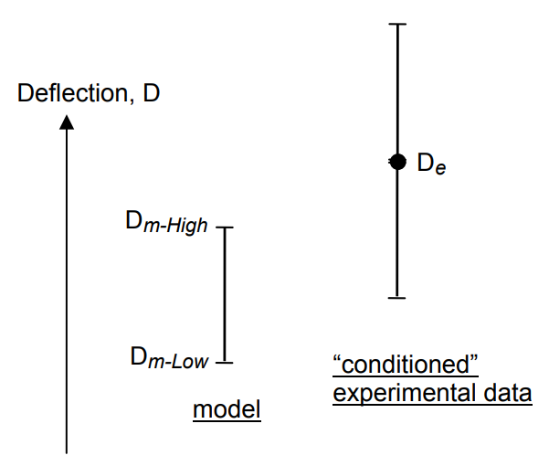
As shown in the above figure, Romero proposes to use the model uncertainty to add uncertainty interval on the measured value. It allows more secure assessment of model bias risk.
Note
In 2, Romero uses a cantilever beam problem to show how type X and Y errors can occur, and uses the method of model and data conditioning to better assess model bias and improve downstream extrapolative predictions.
Construction of the simulated uncertainty intervals¶
Model-intrinsic versus total uncertainty¶
It is important to discriminate between model-intrinsic uncertainty (relative to the travelling model) from the uncertainty brought by the strong model substantiation.
Note
VIMSEO StochasticValidation takes into account the input uncertainties,
so uncertainty intervals computed from
model outputs from the StochasticValidation contain the sum of the
model-intrinsic uncertainties and the uncertainties relative to the strong model layer
(due to uncertainties from the measured inputs, and experiment systematic uncertainties).
Assuming that the total experimental uncertainty is estimated,
one interesting analysis that can be done at each nominal validation point conditions
is to propagate only the model-intrinsic uncertainties (so the uncertainty of the
travelling model parameters).
In the frame of vimseo-composites, it could be done through an RVE
(Representative Volume Element) model.
It would allow to compare the total and model-intrinsic uncertainties.
As previously mentioned, if the simulated uncertainty mostly come
from the substantiation of the travelling model into the strong model,
then the reliability of these validation points can be considered as low
to evaluate the risk of carrying model extrapolations for downstream applications.
Note
The underlying method is to propagate uncertainty through a model. This task is in general very computaional demanding for FEA models. As the Real Space metric are uncertainty intervals, that can be computed by defining two percentiles on a probability distribution, then active learning methods that target percentiles can be useful to efficiently approximate the model response by a surrogate model (goal-oriented surrogate).
Case of mesh-discretization error¶
Similarly to performing systematic uncertainty propagation of travelling model parameters at the nominal validation point conditions, It also makes sense to perform systematic mesh-discretization error evaluation, since the additional cost is of three computations. It allows to assess the magnitude of the mesh convergence uncertainty and bias compared to the model-intrinsic uncertainty.
The method proposed by Romero (2008) is to:
-
build the simulated uncertainty interval around the Richardson extrapolated output value (if Richardson extrapolation is feasible). The uncertainty magnitude can be evaluated using the method provided by Krysl5.
-
build two uncertainty interval around the nominal interval, having same length and being shifted by \(\pm 0.5 \Delta_{sol}\), with \(\Delta_{sol}\) an estimate of the mesh discretisation uncertainty.
Note
If Richardson extrapolation cannot be computed, estimating solution convergence uncertainty is not trivial. Superposing several convergence trajectories from various validation points may be helpful in order to increase the number of samples and estimate a standard deviation at a given mesh size. This method also allows to select the best error versus computational time compromise. Similarly to choosing Richardons extrapolated value as the centre of the simulated interval, a bias correction can be applied when Richardson extrapolation is not available, by considering a delta between the output value at the most refined meshes and the values at the chosen nominal mesh size.
Note
Mesh discretisation error should not be overlooked, because on practical FEA models (or finite difference or finite volume mesh for CFD), VV&UQ studies are generally computational cost bounded. Since mesh discretization error directly drive CPU cost, the mesh discretization error cannot be considered as negligible, and is expected to be a significant source of uncertainty.
Practical use of the Real Space methodology for model adequacy determination¶
Once the real space comparison is built, a procedure is necessary to assess model adequacy.
The real space methodology does not provide a single error value.
Instead, it provides:
- prerequisites for using the real space comparison
- qualitative criteria that characterise the risk of not finding an actual model bias (under-estimation of model bias), and the risk of over-estimating model bias.
Then, when the real space comparison is usable, and the risk of missing model bias is assessed, the real space methodology provides in essence an uncertainty interval of the model bias.
Note
Romero proposes to use the real-space discrepancy approach also for parameter identification. So instead of relying on a transform space metric (subtractive), we would compare the reference and simulated uncertainties in their respective space. We may wonder how this method could be used in an optimisation loop to find the best parameters. Indeed, we need to build an objective function for the optimizer.
Note that Romero provides criteria for assessing model adequacy, rather than evaluating model accuracy.
Prerequisites for reliable validation point to assess model risk extrapolations¶
To ensure reliable risk assessment for model extrapolative activities, two prerequisites are required.
Note
Note that the uncertainty intervals considered in this section assume a large number of simulated and experimental samples, such that the uncertainty interval is not biased by a lack of sampling. Taking into account such bias is not part of this discussion but is certainly an important concern.
The first one is that the simulated uncertainty must be larger than experimental one. but not too large. This property avoids 'free lunch' validation, where the larger the experimental uncertainty, the higher chance of finding the model accurate. Instead, experimental uncertainty is bounded by simulated uncertainty. From Romero (2011), a rational validation criterion can be:
Quote
the net uncertainty range of the experimental data should lie within the uncertainty bounds of the model prediction. That is, the model prediction bounds should be validated to encompass reality, rather than the other way around.
However, if the data conditioning procedure is applied (in case of very low number of experimental repeats), then the experimental uncertainty is set to twice the simulated uncertainty. So the criterion used here to detect a risky comparison could be: simulated uncertainty is at least half the experimental one.
The assumption that the model overshoot errors are not so large is also required, because it can become troublesome in downstream predictions Indeed, if too large, most of the predicted points may be outside the reference interval bounds.
The second one is the relative magnitude of the uncertainties composing the simulated uncertainty.
| Ideal simulated uncertainties | Too large auxiliary model uncertainty | Tool large mesh convergence uncertainty |
|---|---|---|
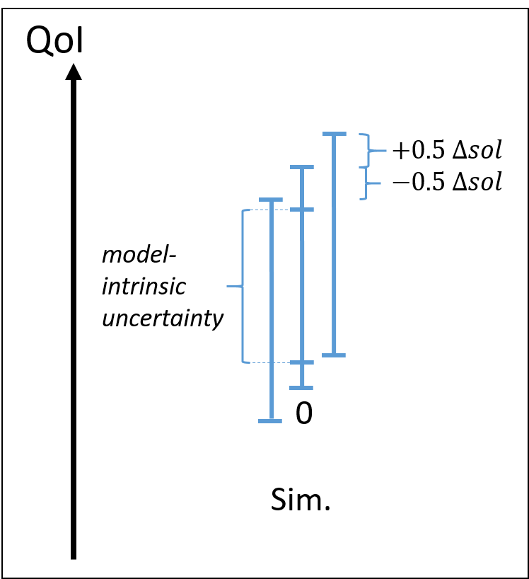 |
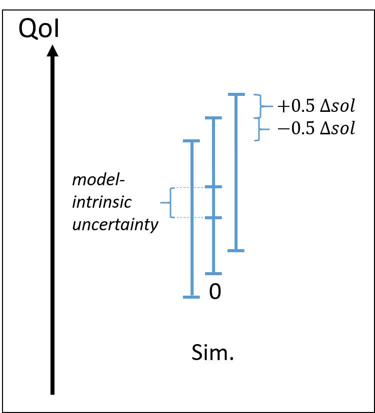 |
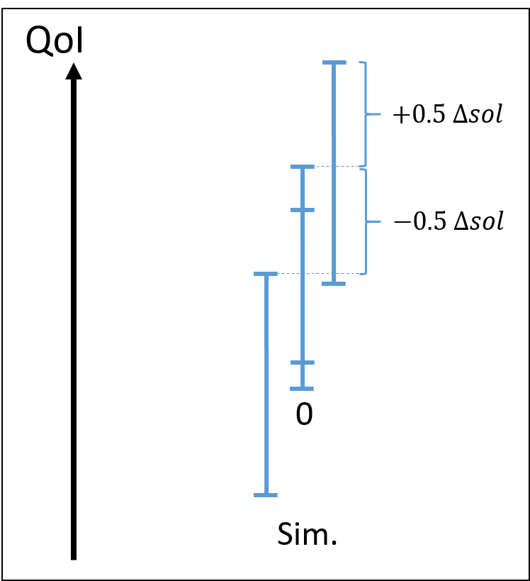 |
Consider first the nominal situation on the left, where:
- the mesh convergence uncertainty is small compared to the total simulated uncertainty
- the auxiliary model uncertainty is small compared to the total uncertainty, or in other word, the model-intrinsic uncertainty is close to the total uncertainty. model-intrinsic uncertainty compared to total simulated uncertainty and mesh convergence uncertainty.
Two situations where prerequisites are not met can occur:
- total uncertainty is large compared to the model-intrinsic uncertainty (middle image)
- mesh convergence uncertainty is significant compared to the total uncertainty (left image)
Risk assessment for incorrect model bias estimate¶
Once the previous prerequisites are met, the Real Space methodology procedure then focuses on the assessment of the risk of evaluating an incorrect model bias.
Consider first unrisky situations.
| Unrisky comparison: model bias is certainly low | Unrisky comparison: model bias is certaintly high |
|---|---|
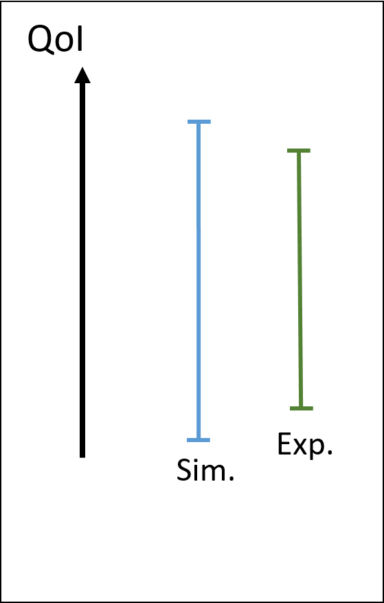 |
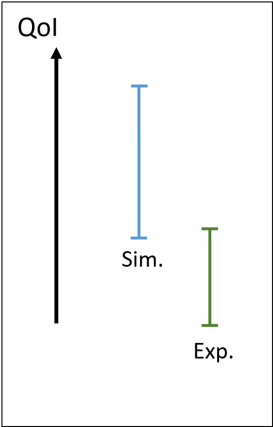 |
In these examples, the property that the simulated uncertainty is larger than the experimental one is respected. In the left case, the model bias is certainly low, while in the right case, it is certainly high. So we are confident in the model bias assessment, whether it is high or low.
Consider now risky situations. This situation is in-between the two unrisky situations, where there is a partial overlapping of the simulated and experimental intervals.
| Risk of underestimating model bias | Risk of underestimating model bias |
|---|---|
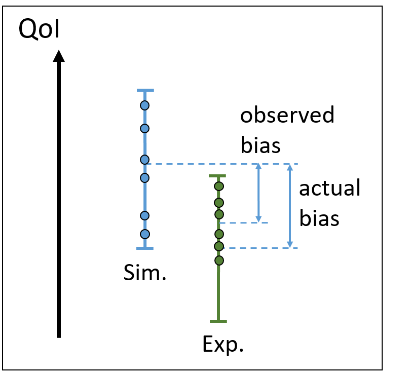 |
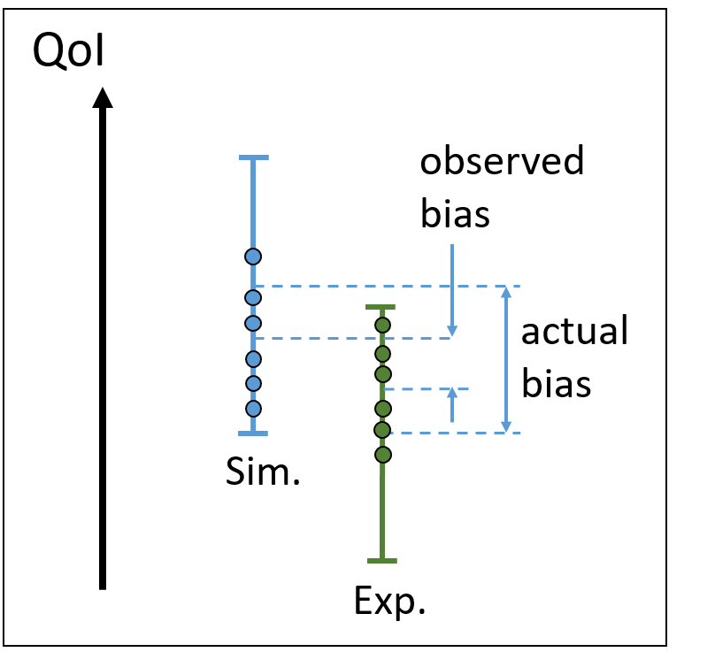 |
Indeed, consider that the experimental point is sampled with a low number of samples. There is the risk of biasing the experimental uncertainty interval, as shown on the left. In such case, the model bias can be under-estimated, which is a risky situation for assessing model extrapolations. As shown on the right, the simulation uncertainty can also be constructed on a small number of samples (for example due to a high computational cost of each run). Then, an additional under-estimation of model bias can occur.
Towards a single metric value based on the Real Space methodology¶
The Real Space methodology provides heterogeneous metrics:
- qualitative criterion for acceptance of the validation point (prerequisites criteria are met or not)
- qualitative criteria to assess risk of model bias under-estimation
- quantitative uncertainty interval of the model bias
To go toward a single metric value, scores could be associated to points 1. and 2. This task remains very prospective.
Possible evolutions of VIMSEO regarding the Real Space methodology¶
Gather and properly store all possible information about the experimental facility, and specific tests apparatus for each validation data. The idea is that the auxiliary models (rollers, grips, tolerance on their position, lack of symmetry etc...) and environment conditions are quantitatively tracked (indicators stored in a database), because they can lead to systematic experimental bias.
Implement plots dedicated to Real Space uncertainty interval visualization. In the experimental intervals, isolate:
- experimental systematic uncertainty,
- output measurement uncertainty,
- data conditioning
In the simulated intervals, isolate:
- numerical errors
- mesh discretization uncertainty
A possible synthetic view of a Real Space comparison at a validation point could be:
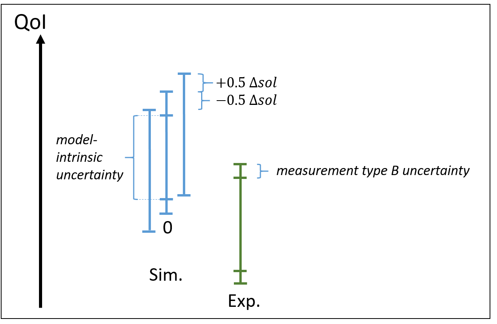
And on a validation case, with respect to a given input variable:
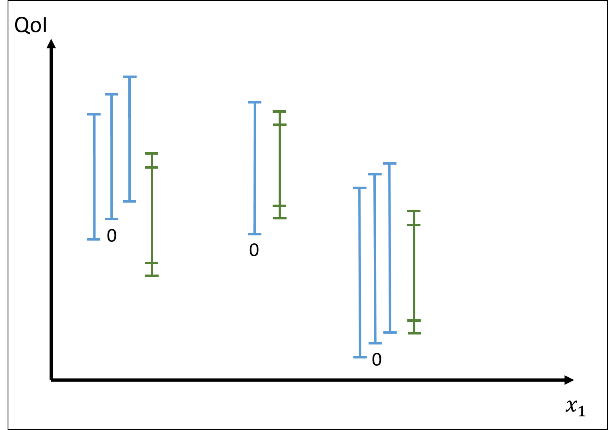
Here, at the middle validation point, no solution convergence was conducted. As argued by Romero, this view is expected to provide richer information compared to a subtractive stochastic metric, to build-up knowledge to assess extrapolation error risk.
Workflow approach to implement the Real Space methodology¶
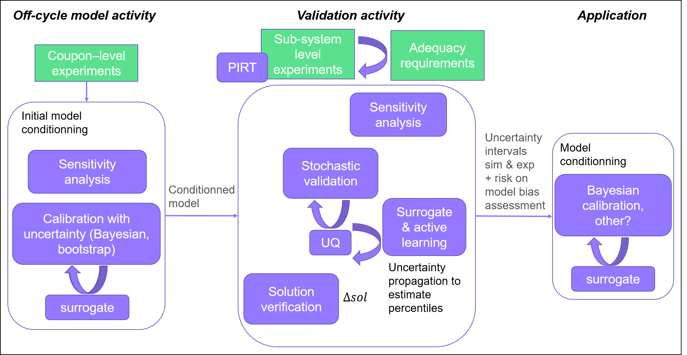
Here, only the validation activity and model conditioning are specific to the Real Space methodology. The initial model conditioning (calibration) is a classical VV&UQ step, but is recalled here to illustrate that it is the initially conditioned model which is the subject of the validation.
Uncertainty interval are at the core of the Real Space validation activity and downstream model conditioning. Thus, several UQ and surrogate with active learning methods are involved in the workflow. In addition, in the Real Space methodology, the model conditioning step targeting a given application consists in modifying the probability distribution of the model parameters such that output uncertainty interval matches experimental interval. Again, it involves specific inverse problem methods like Bayesian calibration which intrinsically handle uncertainties. Maybe more pragmatic methods like applying a shift on the model parameters based on the central value of the uncertainty interval could be used.
Note
Even if the meshing strategy is part of the travelling model, solution verification should be conducted at each validation point (either as part of the validation activity process, or as a separate (mandatory) preparatory step of the validation to find a mesh size / CPU time compromise). In any case, it leads to the same amount of computations.
Conclusion¶
We have seen that the Real Space methodology for model validation links several concepts and methods of VV&UQ, like solution verification, active learning for efficiently estimate percentiles on an output variable and Bayesian calibration.
It is also tightly linked with model conditioning, which is a process that is put in central position in the Romero's view. Indeed, performing model conditioning aims at maximizing the accuracy of model extrapolations in downstream applications, which in essence is why money is spent on model development and experiments. Conversely, it seems difficult to justify spending money on model development and experiments without conditioning the model for applications.
Romero's approach is to consider first what is needed for a good model conditioning (lower the risk of performing erroneous model extrapolation), and then devise a validation framework that gathers indicators and knowledge to perform the model conditioning. Its Real Space validation framework is based on uncertainty intervals, placing at centre stage uncertainty quantification.
This framework can be implemented in practice. The computation of the uncertainty intervals can be done with existing VIMSEO tools. It requires to define ad-hoc workflows involving solution verification and additional uncertainty propagation within the validation. Once this workflow is computed, the uncertainty interval comparisons can be seen as implementing a qualitative error metric with a visual output rather than a single value.
Since it is based on uncertainty intervals, whether these intervals are biased by a too small number of samples (either on the simulation or experimental side) becomes central. It would require the development of specific methods and an adaptation of the above workflow.
Glossary¶
-
Type I error: incorrect rejection of the model, associated to a Model Builder’s risk.
-
Type II error: Non-rejection does not necessarily imply model goodness because noisy and uncertain data can leave much room for model bias error to go undetected. This is the classical Type II. It is associated with Users's model risk. Type II error occurs when a biased hypothesis/model is accepted, where imprecision error from sampling of random uncertainty of output data of a system obscures the fact that the model/hypothesis is biased.
-
Type X error: model bias is obscured by systematic uncertainty in one or more inputs to the experiment.
-
Type Y error: a small model bias is over-estimated due to the fact that the bias cannot be found lower than the experimental uncertainty.
-
Systematic uncertainty: Uncertainty that cannot be reduced, like an interval of tolerance for the output of a sensor.
-
Type A&B errors: relative to data measurement uncertainties
-
Vicente Romero. Comparison of several model validation conceptions against a "real space" end-to-end approach. SAE International, 4:396–420, 2011. URL: https://www.jstor.org/stable/10.2307/26273778. ↩↩↩↩↩
-
Romero Vicente Jose. Type x and y errors and data and model conditioning for systematic uncertainty in model calibration validation and extrapolation. Technical Report, SAE Technical Paper, 01 2008. URL: https://www.osti.gov/biblio/1146297. ↩↩↩
-
Schlesinger S. R. ; Crosbie R. ; Gagne R. ; Innis GS S. ; Lalwani C. S. ; Loch J. ; Sylvester R. J. ; Wright R. D. ; Kheir N. ; Bartos B. Terminology for model credibility. SIMULATION, 32(3):103–104, 1979. URL: https://doi.org/10.1177/003754977903200304, arXiv:https://doi.org/10.1177/003754977903200304, doi:10.1177/003754977903200304. ↩
-
Stefan Riedmaier, Benedikt Danquah, Bernhard Schick, and Frank Diermeyer. Unified framework and survey for model verification, validation and uncertainty quantification. Computational Methods in Engineering, 28:2655–2688, 2020. doi:10.1007/s11831-020-09473-7. ↩↩
-
Petr Krysl. Confidence intervals for richardson extrapolation in solid mechanics. J. Verif. Valid. Uncert., 7(3):031005, 2022. doi:https://doi.org/10.1115/1.4055728. ↩